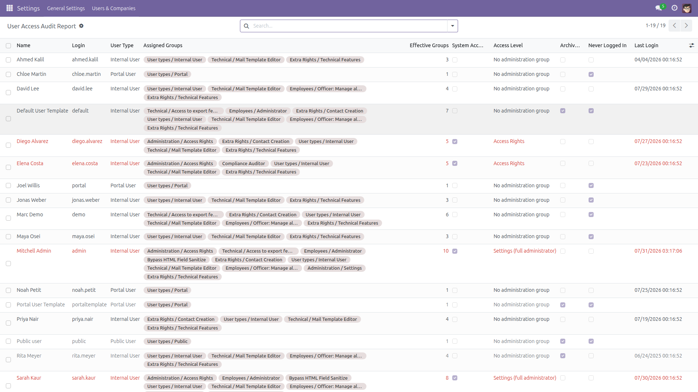
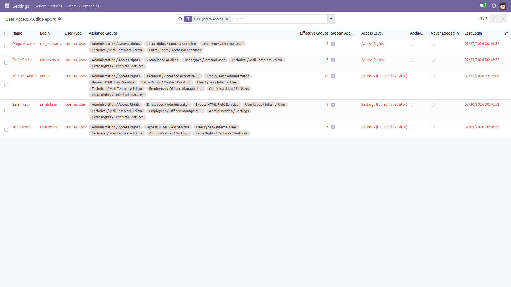
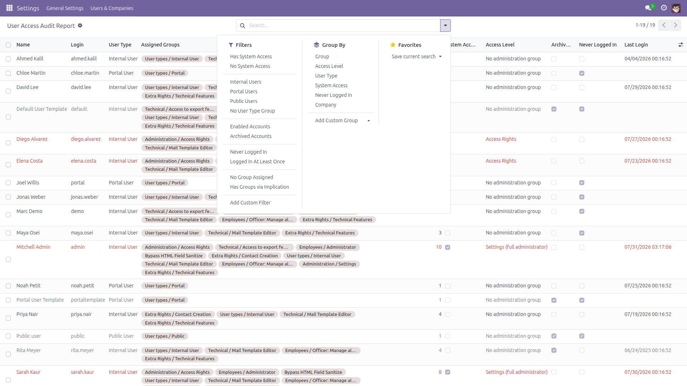
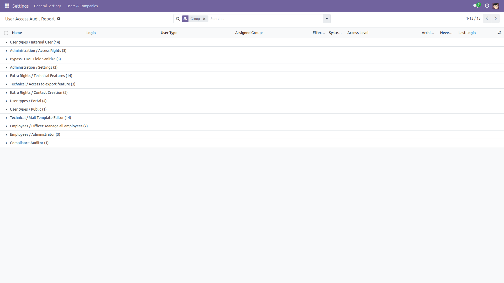

User Access Audit Report
Every user, every group, one screen
Answering “who can do what in this database?” today means opening the Users list and clicking through every user, one at a time. This module adds a read-only report with one line per user account: the groups on the account, a clear flag for privileged access, the user type, whether the account is archived and whether it has ever been used to log in.
Free and open source (LGPL-3), Odoo 14.0 through 19.0.
- Groups as tags — the groups on each account, in one column you can search, filter and group by.
- Privileged access flagged in red — a System Access tick and an Access Level column for Administration / Settings (
base.group_system) and Administration / Access Rights (base.group_erp_manager).
- Implied groups counted honestly — the flags use the effective groups: the groups on the account plus every group those imply, transitively. A user whose only group implies Settings is flagged as an administrator, because that is what they are.
- Archived accounts included — deactivated users keep their groups; the report lists them with an Archived flag instead of hiding them.
- Never Logged In — derived from the real login records, not from the non-searchable “Latest authentication” field, so you can filter and sort on it.
- User type — Internal, Portal, Public, or No User Type Group for accounts that hold none of the three.
- Filters that answer real questions — has system access, internal, portal, public, enabled, archived, never logged in, no group assigned.
- Group by group (Odoo 15.0 and later) — “who is in Settings?”, “who is in Sales / Administrator?” — plus group by access level, user type or company.
- Export-friendly — select all and export the whole picture to a spreadsheet for a security or licence review.
- Read-only — one SQL view, no loop over users, nothing in your database is modified. The effective-group columns are computed across all accounts on every page, so past a few thousand user accounts expect a second or so per page.
- Admin only, multi-company safe — visible to the Administration / Settings group, and it ships the same record rule Odoo applies to users, so no account a record rule hides from you can appear here. Archived accounts, which the standard Users list hides by default, are shown on purpose and flagged.
Screenshots

Every user with their groups, effective group count, access level, archived and never-logged-in flags. Accounts with administration access are highlighted in red. Nothing is filtered out by default: portal, public and archived accounts are all on the opening screen.

The Has System Access filter: everyone who can change access rights, including users who only reach it through an implied group (here, “Compliance Auditor”).

Ready-made filters and groupings: system access, user type, enabled / archived, never logged in, no group assigned, groups via implication.

Grouped by group — how many people sit in Settings, in Access Rights, in each application group, at a glance.
Installation
- Copy the module into your addons path, or install it from the Apps list.
- Open Apps, remove the “Apps” filter, search for User Access Audit Report and click Install.
- Only the standard
base module is required.
Configuration
- No configuration is needed — the report works as soon as the module is installed.
- Access is restricted to the Administration / Settings group; no other user can read the report, and no user can write to it.
- Optional: mark the menu as a favourite for one-click access.
Usage
- Go to Settings → Users & Companies → User Access Audit Report.
- The list opens on every account, sorted by name, with anything holding an administration group highlighted in red. Nothing is filtered out by default — an audit should not start with accounts hidden.
- Apply a filter — Has System Access, Archived Accounts, Never Logged In, Portal Users, No Group Assigned — or type a group name in the Group search box.
- Group by Group (Odoo 15.0 and later) to see the membership of every group, or by Access Level to count your administrators.
- Select all and use Export to hand the whole picture to your auditor in one file.
What the columns mean, exactly
Assigned Groups is the group list recorded on the user account — exactly what the Groups page of the user form shows. Odoo 14.0 to 18.0 write implied groups into that list when a user is saved, so on those versions it is already the effective set; Odoo 19.0 keeps only the groups you assigned directly and works out the rest at runtime.
System Access, Access Level, User Type and Effective Groups always use the effective set: the assigned groups plus every group they imply, transitively. That is computed from Odoo’s own Inherited (implied) groups, so the flags mean the same thing on every supported version. Groups via Implication is the difference between the two: on 14.0 to 18.0 it is normally 0 and anything above 0 is worth a look; on 19.0 a positive number is expected and normal.
Limitations, stated up front
- The report covers groups. It does not expand a group into its individual model access rights or record rules — use the standard Access Rights / Record Rules views for that.
- The OdooBot / superuser account (database id 1) is excluded: it bypasses every access rule by design and would only add noise.
- Group by Group needs Odoo 15.0 or later. Odoo 14.0 cannot group a list by a many-to-many field, so that grouping is not offered there — on 14.0, filter by group with the Group search box instead. Every other filter and column is identical on all six series.
- On Odoo 19.0 the Internal User group itself implies Technical Features, so every internal account has a non-zero Groups via Implication count there. The column is informational on 19.0 and the matching filter is not offered; on 14.0 to 18.0 a non-zero count is an exception worth investigating.
- The Last Login column reads Odoo’s login records (
res.users.log). If you purge that table, older logins disappear from Odoo as well as from this report.
- It is a report: it never modifies a user, a group or a membership, and it offers no button that would.
License: LGPL-3 · Source on GitHub · Issues and contributions welcome.